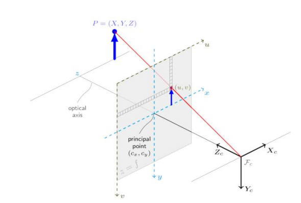
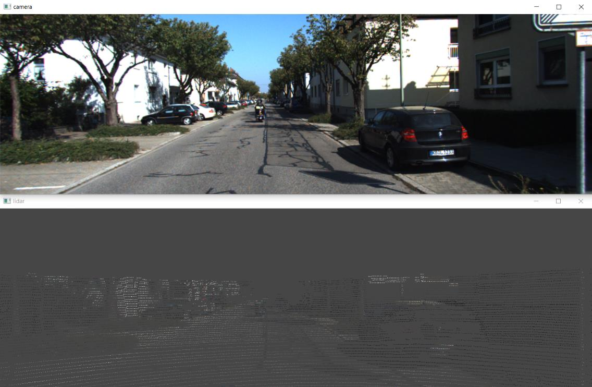

Creation of the semantic map of an urban environment
The goal of this project was to create a semantic map of an urban area using the data from the LiDAR and the cameras of the KITTI Dataset. This project is based on two main parts: 2D image segmentation and 3D point cloud processing. The end result would be having a global point cloud with each of its point having a certain class depending on the object it belongs to.
The KITTI Dataset
The KITTI Dataset is made of multiple acquisition from each sensors that was on a car driving in a urban area. Each of these acquisition has different types of images and one point cloud for each acquisition. The goal is to merge all the point clouds into one to have the global point cloud of the area where the car was driving.
First step of the LiDAR data processing
 To construct the map we first need to process the point clouds obtained by the lidar. A point cloud consists of a list of coordinates corresponding to the position of points in three dimensions. The goal is now to have semantic information in addition to the position of the points. To achieve this, we will first project the points of the point cloud into the coordinate system of the camera where the images are acquired.
Here is the result:
For now, each point has the same color as the corresponding pixel in the image. The points where there is no corresponding pixel in the image will not be used.
Image segmentation
We used a pretrained model called FastSeg to do the segmentation.
Now each point of the point cloud has its own class. We just need to reverse the projection to retrieve our data in 3D.
Creation of the global map
We used the data from the inertial measurement unit that was on the car to replace each point cloud in its absolute position. Now, if we remove all the point that belongs to objects that are not static like cars or bicycles, we will finally have our semantic map.